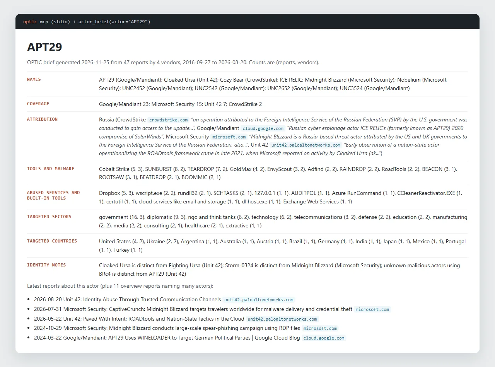

Problem
Threat reports contain useful actor, malware, infrastructure, technique, and relationship data, but analysts often have to read long narrative reports manually and reconstruct structure themselves. OPTIC makes the extracted structure queryable while preserving links back to source text.
Solution
The pipeline ingests reporting from sources such as Mandiant, Google security resources, Cisco Talos, CrowdStrike, Microsoft, Sophos, and Unit42. It combines deterministic extraction, LLM-assisted inference, vendor-specific normalization, and PostgreSQL models for articles, extraction JSON, entities, aliases, mentions, relationships, and technique facts.
Data Flow

Design Decisions
Source Traceability
Source quotes and extraction JSON are retained so structured records can be challenged and traced.
Archive Versus Corpus
Public copy separates the broader archive from the analyst-usable operational corpus to avoid inflated claims.
Hybrid Extraction
Heuristics handle repeatable patterns while model-assisted inference helps with ambiguous narrative context.
Snapshot Release
The public release page and downloadable database snapshot make the corpus inspectable outside the local dev environment.
Current Public Release
The release on opticlab.net covers 1,078 articles from 4 data sources, 981 of them with current extractions. Those articles yield 40,476 findings. 40,122 of them (99.1%) keep a source quote, and 32,081 come from language the report states directly. The release also holds 15,617 searchable IOCs and 2,607 connected relationships.
The release is a snapshot dated March 28, 2026. The working corpus has kept growing since then. By November 24, 2026 it held 1,956 articles from six vendors: Google/Mandiant, Unit 42, Microsoft, Cisco Talos, Sophos, and CrowdStrike.
Published Analysis
Most readers will never query a database, so the release also publishes long-form reports written from the corpus. Five are live. Two are threat models for UNC3886 and UNC6201, groups the source reporting links to China. The others cover the Canvas extortion case, Pakistan-linked operations from 2019 to 2025, and Iran-linked operations from 2017 to 2025. Each report links its source articles. The threat models mark which findings the sources state directly, which are modeled, and which are left out.
Measuring Extraction Quality
An audit against the source articles measured precision by data type. It ranged from 98% for ATT&CK IDs copied from report tables down to 37% for techniques the model inferred, so model-extracted data is now gated on what each article actually supports.
A reviewed 36-article answer key compares extraction models before the corpus is re-extracted. The best configuration scored 91.7 article-level F1, averaged over two runs. A cheaper model scored 88.4 at roughly one-ninth the cost. Identical runs vary by 2 to 4 points, so smaller gaps are treated as noise.
The fairer test is the 24 articles that played no part in tuning. There the two configurations scored about 89 and 87.5. The older extraction now stored in the database scored 72.5 on the 12 tuning articles. The new configurations score higher on those same 12, but they were tuned on them, so that comparison overstates the gain.
Analyst Tools Over MCP
A read-only MCP server exposes five tools over stdio: actor_brief, who_uses, whats_new, claim_evidence, and report_counts. Every answer cites vendor, date, and URL, and the tools keep quoted relationships separate from weaker same-report mentions. Cross-vendor identity clusters merge each vendor's name for the same group. When measured, one APT29 brief condensed 41 reports (about 215,000 tokens) into about 1,150 tokens. The server runs locally against the corpus and is not part of the public release. The repository passes 703 automated tests.
